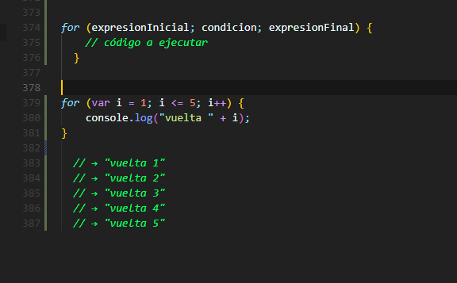

- Crea una variable con el nombre mostrarMensaje y dale un valor true o false. Evalúe con una sentencia condicional su expresión lógica. Si es true, genere una mensaje en consola con la siguiente frase: "Bienvenido a mi web", en caso contrario, muestre en consola: "Usted no tiene acceso".
- Crear una estructura condicional que evalúe si un número, alojado en una variable, es positivo. En el caso de que así sea, envíe un mensaje en consola con la siguiente frase: "Este número vibra alto", en el caso de que el número sea negativo, envie un mensaje en consola: "Este número es negativo".
- Crear una estructura condicional que evalúe un número entre el 0 y el 10 y devuelva un string dependiendo de lo siguiente:
- Menor a 6: Desaprobado
- Mayor o igual a 6 y menor a 7: Regular
- Mayor 0 igual a 7 y menor a 8: Bueno
- Mayor o igual a entre 8 y menor a 10: Muy Bueno
- Igual a 10: Excelente
- Menor 0 o mayor a 10: Puntaje inválido
Consignas:
Anotaciones:
Temario de la clase:
- Condicionales en JavaScript
- Control de Flujos
- Valores Booleanos
- Operadores de Comparacion
- Operadores Logicos
Condicionales en JavaScript
A menudo cuando se escribe código se deben realizar diferentes acciones para diferentes condiciones. Las «instrucciones condicionales» se usan para realizar las diferentes acciones según una condición.
IF: Se usa para ejecutar un bloque código si la condición es verdadera.
IF… ELSE: Se usa para ejecutar un bloque de código si la condición es verdadera u otro bloque de código si la condición es falsa.
IF… ELSE IF… ELSE: Se usa para seleccionar uno de los muchos bloques de código a ejecutar.

SWITCH: Se usa para seleccionar uno de los varios bloques de código a ejecutar.
Control de Flujos
El control de flujo (Control flow) es, en ciertos lenguajes de programación como en JavaScript, el orden en que son ejecutadas las instrucciones en el código.
El código JavaScript se ejecuta, a grandes rasgos, en un orden líneal, desde la primera línea de código hasta la última. Sin embargo, este orden se altera cuando el intérprete (el navegador) encuentra un bloque de código que cambia el flujo.
A los bloques de código que tienen la capacidad de alterar el flujo de ejecución de nuestro código JavaScript se les conoce como estructuras de control.
Sentencia de bloque
La sentencia de bloque es una estructuras sencilla, que se utiliza simplemente para agrupar declaraciones, y no modifica el flujo de ejecución.
Sentencia condicional
La sentencia condicional se utilizan para ejecutar un bloque de código únicamente si se cumple cierta condición.
Sentencias de iteración
Las sentencias de iteración, también llamadas bucles o loops, se utilizan para ejecutar un bloque de código de forma reiterativa, y basada en alguna condición.
JavaScript cuenta con varias estructuras de este tipo.
while
La sentencia while itera sobre un bloque de código continuamente mientras la condición indicada sea verdadera.
do … while
La sentencia do…while funciona igual que while, pero con la diferencia de que el bloque de código se ejecuta al menos una vez, independientemente del valor de la condición.
for
La sentencia for recibe tres argumentos que determinan la forma de iteración del bloque de código.
Una expresión inicial que se ejecuta una sola vez, antes de la primer iteración;
Una condición que debe cumplirse para ejecutar el bloque de código;
Una expresión final que se ejecuta al final de cada iteración;
Por lo tanto, el bucle va a iterar sobre el bloque de código tantas veces como se cumpla la condición, y teniendo disponible dentro de su contexto los valores de las expresiones inicial y final.
Sentencia switch
La sentencia switch evalúa una expresión, comparando su valor con otro valor llamado case. Cuando los valores coinciden, se ejecuta el código comprendido desde el case hasta el final del bloque switch, o hasta encontrar una sentencia break.
Si ninguno de los case coincide con la expresión evaluada, se buscará una sentencia default, y si esta presente, se ejecutará el código que le sigue.
Sentencia break
La sentencia break interrumpe abruptamente la ejecución de un bloque, sentencia de iteración o sentencia switch.
Sentencia continue
La sentencia continue interrumpe la iteración en curso, y hace que se continúe con la siguiente.
Valores Booleanos
Los booleanos son un tipo de dato primitivo comúnmente usado en lenguajes de programación. Por definición, un booleano tiene 2 posibles valores: true (verdadero) o false (falso).
En JavaScript, frecuentemente se genera de manera implícita la coerción de tipos a booleano. Si, por ejemplo, tienes una sentencia if que evalúa cierta expresión, esa expresión genera coerción a booleano:
En el ejemplo anterior, la sentencia if evalúa a la constante a. Dado que el valor de a no es de tipo booleano, JavaScript genera coerción de tipo para poder evaluar la sentencia y concluir si se trata de un valor Truthy (verdadero) o Falsy (falso). Obtenemos como resultado 'una cadena' debido a que las cadenas de texto en JavaScript son un valor verdadero.
Solo hay unos cuantos valores que generan coerción a falso:
- false (en realidad no genera coerción porque ya es falso)
- null
- undefined
- NaN (Not an Number)
- 0
- -0
- 0n, -0n (BigInt)
- " ", ' ', ` ` (cadena de texto vacía)
- document.all
Cualquier otro valor diferente de los anteriores generan coerción a verdadero.
Operadores lógicos
Los operadores lógicos se utilizan normalmente con valores booleanos (lógicos); cuando lo son, devuelven un valor booleano. Sin embargo, los operadores && y || en realidad devuelven el valor de uno de los operandos especificados, por lo que si estos operadores se utilizan con valores no booleanos, pueden devolver un valor no booleano. Los operadores lógicos se describen en la siguiente tabla.
AND Logico: &&
Se expresa a través de doble ampersand "&&"
Evalua operandos
Los dos operandos deben de ser true
OR Logico: II
Es la o en nuestro lenguaje.
Se representa con las barras
Implica que al menos uno de los operandos sea true.
Si todos los operandos son falsos devuelve como resultado false.
NOT Logico: !
Se representa con el signo de exclamación !
Se puede utilizar hasta dos veces
Convierte el valor booleano por defecto y lo invierte

Operadores de Comparacion
JavaScript Resuelve primero los operadores de comparacion y luego de los logicos.
Un operador de comparación compara sus operandos y devuelve un valor lógico en función de si la comparación es verdadera (true) o falsa (false). Los operandos pueden ser valores numéricos, de cadena, lógicos u objetos. Las cadenas se comparan según el orden lexicográfico estándar, utilizando valores Unicode. En la mayoría de los casos, si los dos operandos no son del mismo tipo, JavaScript intenta convertirlos a un tipo apropiado para la comparación. Este comportamiento generalmente resulta en comparar los operandos numéricamente. Las únicas excepciones a la conversión de tipos dentro de las comparaciones involucran a los operadores === y !==, que realizan comparaciones estrictas de igualdad y desigualdad. Estos operadores no intentan convertir los operandos a tipos compatibles antes de verificar la igualdad
Mayor
Evalúa siempre de izquierda a derecha
Menor
Evalua siempre de izquierda a derecha cuál es el menor
Mayor o Igual
Es incluyente del numero con el que se compara
Menor o Igual
Es incluyente del numero con el que se compara
Igualdad
Compara si los valores de dos operandos son iguales
No compara el tipo de dato, solo el valor
Igualdad Estricta
Evalua el valor y el tipo de dato de dos operandos.
Si no son iguales el valor y el tipo de dato da como resultado false.

Desigualdad
true siempre y cuando los valores sean diferentes
Desigualdad Estricta
Evalúa que tanto el valor como el tipo de dato sean desiguales